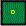
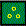

Nobody knows what Poetry is. Nobody knows how to translate it correctly. I do. Follow me and I'll tell you.
If you love poetry (in any language), if plain English is readable for you, if you are curious what the poetry is and what is the difference between good poetry translating and bad one, the book is just for you.
Imagine yourself in a small boat in the middle of Great Ocean. You drop out a bottle with a letter inside. Could you be sure that somebody like you will get the bottle and read your message in a year or two? Not really. But if you seal your ideas into a poem as Blake or Shakespeare did and drop it out into the Ocean of Humankind could you be sure that somebody like you will get the poem and read your message in a century or two? No doubt. Live be the Poetry!
So you read the message and hear the voice of the author. What can prevent you from it? The Language. If it is not your language you can not read it. So you need somebody to translate the message for you. That's why poetry translating is as important for us as a poetry itself. Many of us tried to translate poetry. As a Russian publisher told me once every day somebody comes with his/her own translation of Shakespeare's sonnets and twice a year with the sonnets complete. The question is as follows: How we can distinguish between good and bad poetry translating?
But it is the second question. The first one is as follows:
I will consider only short poems. Time is flying as an arrow and long poems don't fly with the time. Short ones do.
Two features define poem as a specific text.
But what about rhyme, rythm, stanza and another usual features of Poetry? They are only cunning tricks invented by wise authors to get the aim. And the aim is to be impressive..
Let's consider a beam of white light. By using prism we can divide it into colored beams: red - orange - yellow - green - blue - violet. If the beam is not white we can found that some colores are used but another ones are not. We will use notation like ROYGBV to show that Orange, Green and Blue are used but Red, Yellow and Violet are not.
Consider the poem. By using some theory we can divide tricks used by authors into 10 groups (0123456789). We will use some theory as a prism. Let's suppose we apply the method to the specific poem and have found that some tricks are used but another ones are not. We will used notation 0123456789 to show that tricks of groups 1258 are used by poet but tricks of groups 034679 are not. (More precisely: the author takes in account some groups of tricks and ignores the rest)
Consider a poem P and 2 different translating of the poem into the same second language, named A and B. Suppose P=0123456789, A=0123456789, B=0123456789. What we can say about the variants? A has what the P has and some more tricks. B has only part of what P has. Conclusion: both translation are not precise, but A is obviously better than B.
Next step is: how we can recognize the tricks and put them into the groups.While building the groups I'd like to be sure that the set of groups cannot be improved anywhere. Groups must cover every possible option. Every option must be covered once and only once. I call such a set "Perfect". This is a math.
I really can prove that the set of groups I will use is perfect. The proof take some space and time and I tell it later. For now remember that the proof is the part of a very powerful logics I invented in 1990 called Levels' Theory.
To start let's enumeratethe groups one by one. Take in account that terminology I use is not common. That's why I provide a lot of examples to be transparent.
Every group corresponds to some State of the Mind (of Abstract Mind - I mean Human Mind as well as Not Human). Every State of the Mind has its own Logics and its own Attention Field. The Attention Field is the Root and the Logics is the Fruit. The table I put below contains pictures (mnemonic pictographs), some definition of Attention Field, some definition of Logics and some definition of Poetry Tricks' Group. Examples i'll give you next. Don't care aboout two last columns.
|
level
|
pictograph
|
Attention field | Logics | Group of tricks | Question | Answer |
|
0
|
|
Nothing | Ignorance | Transparency | no questions yet | no |
|
1
|
 |
One object | Recognition, Naming | Sound | what? | thing - body |
|
2
|
 |
Many objects | Enumeration, distinguishing | Repeatability (including rythm, rhyme and stanza) | where? | space - place |
|
3
|
|
One process | Ordering, infinity | Image | when? | time - contest |
|
4
|
|
Many processes | Grouping | Motto | how? | role - ensemble |
|
5
|
|
One map | Classification | Dynamics | who? | free will - freedom |
|
6
|
|
Many maps | Modelling | Rhytorics | why? | personality - reason |
|
7
|
|
One space | Paradox | Associasions | what if? | idea - creativity |
|
8
|
|
Many spaces | Multi-system | Concept | what for? | intuition - spirit |
|
9
|
|
Everything | All | Style | no questions anymore | yes |
Jacob Feldman
William Sheakespeare tragedies and levels of his heroes
Preface
If during the reading you feel yourself boring dont leave the page, first go here, please.
Science and Life
Where is the border between science and chitchat? If somebody A watched something B and found some special fact C this ABC is included into zone of chitchat immidiately but not to the science zone. To include it into the science zone we need to find another sombodies A2 and A3 that will watch the same B and will find the same C. Only repeatable facts of repeatable observation could be included into the science zone.
That's why our day-to-day life is so hard to be included into the science zone. The life is unrepeatable! Every moment is full of details and every detail is unique! But the importance of the subject here is more than hardness of the subject. Why, what is more important for us than our daily life?
Again and again researchers start to study daily life to include it into the science zone and every time retreat in despair. And finally when the war seems to be lost and we have to go home the help comes. It is from art, the sister of science. Not to substistut science when life is the subject as some philosophers say. Art (including writing and drama and cinema) are the camera to make a snapshot of the life. Good art catches the more important fragments of life, key fragments. And humanity science must investigate the fragments, understand them, deduce them theoretically as a natural science does.
The concept of "key fragments" or "key positions" I get from book of chesmaster Nikitin, coach of Garry Kasparov, the chess champion. When Kasparov was a scholboy Nikitin prepared for him chess positions to study. And he collected the positions into groups. In every group one key position were found. If only you understand how the key position work, what is important in key oposition and what is not, all the group is transparent for you. If you see a new position try to recognize key position this one is similar to. Sometimes there no key position similar. It means you've found a new key position and new group aroun it.
So th eprocess of studying chess is divided inti the three stages
Go back to the daily life
Finding key positions. Art is doing this job for us. What is a drama play or movie film? It is a fragment of life selected to show us some key part of life. Look and understand it and you can understand many similar positions.
Recognizing. This job is for everybody in daily life
Investigating of key positions. Humanity science must do the job. And we show you the new sort of humanity science that is able to do the job
I start with Shakespeare plays. Than I go to more plays and movies, but not the art is my subject and not the art is my goal. The art is a mirror, the life is a subject, the ubderstanding of daily life is our goal.
In the novel the hero could change hisself/herself. The play is short. The hero is unlikely to change himself/herself but likely to discover himself/herself outside through speech and action. The forces moving the play are done rom the beginng. These forces are mofing the play to the final scene. What are the forces and how they work? This is a scince job to describe, to defind, to explain, to predict, to deduce. We show you how to do this as formally as you can calculate the stone falling or rocket's fly.
I show you a new part of humanity science I ivented to solve such problems. I call it Levels' Theory of Abstaract Inrellect (TAI). Some tips owhat the theory is about you can get from table above or from more detailed explanation from here. (Russian reader can go here)
I will try to place all explanation here. So I will make all definitions along the text. Some useful and unexpectable results will be definition of many common notions (such as good or evil, altruism or egoism, bad guy or good guy). Common notions are working, but we we will build them from our basic elements as molecula could be built is atoms.
According to TAI every person is defined by 3 levels of 8
possible ( numbered from 1 to 8) the triplet is ordered though the order
is dynamic for some reason (see examples below) (levels 0 and 9 are out
of the our scope now)
The triplet says a lot about the person. For example 356 or 543 or 432.
Let's describe these persons in common terms.
Individualist or collectivist? Even levels are collective, odd ones
are individual. So 356 and 543 are more individualists, 432 are more
collectivist.
Harmonic or contradictory? If the triplet contains three numbers
consecutively (order does not matter) the person is harmonic. If
not - contradictory. So 543 and 432 are harmonic. 356 is contradictory.
Harmonic person has a good luck, contradictory person has a bad luck in
all his/her deeds.
Villain or good-maker? If the lowest of the number goes first in
the triplet the person is a villain, if not - good-maker.
So the 356 is villain, 543 and 432 are good-makers.
So we have a play where 543, 432 and 356 are acting. 356 is a villain, contradictory
individualist. 543 is individualist, harmonic good-maker. 432 is collectivist,
harmonic good-maker. Do you recognize the play yet?
The rules of interaction are as follows
Cooperation rule. If the persons acting demonstrate sequential levels
(as 34 or 65) than cooperation comes quickly and easily. The higher level
becomes boss and the other one becomes an assistant with no
doubt. 6 is a boss for 5 and 3 is assistant for 4.
Rivalry rule. If the same levels are demonstrated the rivalry state
appears. This state is unstable and tends to fall in with another rule case
(see above and see below). For example 3 against 3 is rivalry state.
Aggression rule. If persons demonstrate levels with difference more
than 1 the lower lever becomes an agressor and try to destroy the other
one. The higher one must escape or die. For example 3 cannot stay against
1, he/she dies.
Manoeuvres. When interaction start every side makes one move in turn
as in chess. Make move means select one number from triplet. Move after
move makes one of positions described above (cooperation, aggresion, rivalry).
Cooperation is a best an final state. Rivalry provokes the next move. Agression
wait for the next move but if the next move is for aggresion too the game
is over and the last higher level's player dies. Complete cooperation model
is a sum of all such parties.
For example if 543 and 432 start game for 5 to 4, the coopeartion is achieved.
More than that, such players achive cooperation immidiately from any move.
Only 34 is cooperation when 345 is assistant and even in this case the game
may be continued as 34-5 with 5 to 4 end, 432 is assistant again and 543
is a boss. We would say "543 dominates 432 here"
Another example. 543 against 356. 3 against 3 is for rivalry but goes to
45 cooperation. Another start moves go to cooperation and 356 dominates.
So 356 dominates 345.
Next example. 356 against 214. If 214 make move 1 the 356 dies on any reply.
So new hero appears in a play - 214. Collectivist, good-maker, contradictory one. Collectivists usually are women while individualista are men.
Action: One villain, contradictory individualist lost and
lost. (Because he is contradictory). He is villain individalist. That's
why he hates two lucky people nearby (they are harmonic ones) and decided
to destroy their life. By the profile (356) he dominates on one of them
(543). This one (543) dominates om another one (432). What the plan could
be?
The villain 356 has level 6, this is his main advantage. What is 6?
6 - system thinking, world view making.
Not 543 neither 432 can make the world picture for oneself. They have to plagerize it. But inside the picture they act strong and fast.
4 - acting according rules, keeping the role
So 356 decided to make for 543 and 432 new world picture where they must destroy theiselves. 543 will judge 432 for crime she did not do and execute her. After that he will judge and execute himself. It supposes a great responsibility and a strong will, but 543 has it.
5 - ability to get responsibility, act quickly with no doubt
432 wil not fight to defend herself. She cooperated with 543 as assistant.
2 - following the stream
The plan would be implemented well but new 214 person appears.
1 - concentrating on one object or act ignoring any other things in the world.
Once more time. So 352 decided (from envy) to destroy 543 and 432. He makes for them the world picture and they accept it . According the picture 543 must judge and execute 432 and after that judge and execute himself. He does it. Only now 214 appears. She (214) disclosed for people what happens. 356 cannot defend himself and dies.
Do you recognize the play now? Shakespeare, "Othello"
356 - Jago, 543 - Othello, 432 - Desdemona, 214 - Jago's wife.
The las question is why the subject of crime is wfe's infidelity. Desdemona has so litle responsibility in the world, that the fidelity is the only rule she must keep in.
Next play is about two people with profile 563. I recall you that Jago was 356. He was villain, they are good-makers. But this is tradegy and who is not villain is victim. What is their weekness? They have no 4 and have 5 and 6. Thats'why they will avoid common ways and fihgt for freedom (5) and private life (6). And they will fight till death (3).
But who is the villain? Their is one heo with profile 456. He is harmonic collectivist but nevetherless he is villain. Our 536 look for help and appeal to him. But in the moment of action he esape according the role (4). Without help they make wrong world picture (6) and go to death (3).
Romeo and Julia - 536. Lorenzo - 456. Family heads - 135, Merkuzio -753
7 - joker, paradoxical mind
Tibald kill him. Tibald is 135
Take in account that in "Othello" women have 2 even levels and men have only 1. Julietta have only 1 even level because she is teenager, 14 years only, not woman yet. (Thatt's why Sheakespeare made her 14 not 23 as in novel)
Hamlet, very comlex play
Before the play start one of heroes (543) became a victim of another one (356). It looks like "Othello"'s conflict. But it is onle preface. Third player, women has here profile 214. She is not victim, not villain, but some sort of co-villain.
King the Father is 543. Next king the Uncle is 356. Queen is 214.
2 - follow the time
1 - concentrate on one thing, ignore all the rest
4 - keep your role
Hamlet, truth seeker (6), paradoxical thinker (7), brave heart (3) has to follow father's plan and became a killer. He kives now for one thing only - not merely kill the ancle, but put him in a Hell, where he must be. That's why Hamlet did not kill him while the uncle is praying. Level 6 helps him to calculate everything. Level 7 helps him to pretend mad.
Why Hamlet cannot avoid the new and bad role? First, his father is his ego, his deep identity. Second, the Ghost is everywhere, no escape.
The reordering levels in the profile when world press you is very important phenomenon. Good maker became villain and vice versa. Sometimes it means unstable personality as in Vladimir Visotsky's song "splitted personality"
"I have two I, two poles of the planet, two enemies to one with other fight, when one of them wish opera and ballet, another one wish casino tonight!"
The best I is here 851, the worst is 158.
8 - extraordinary sensibility, ability to feel and understand people not like oneself.
"I open soul, I know truth and beauty and women give me love and money then".
1 - concentarating on one thing, ignoring all the rest
"I'm eating empty glass as stupid dummy and dropping down the Schiller's heavy book".
Two examples from Holliwoods cinema production.
Jimmy the Tulip (Bruce Willice) - 576, Oz the dentist - 654, his wife 137, dentist assistent maiden 536, Franky - 435, policeman - 435, Jany 345, Cintia 654.
See who is villain: Tulip (576), dentist's wife (137), Jany (345). They are the force moving the action ahead. But at the end Franky changes 435 to 345. He does not subordinate to Jimmy any more. In responce Jimmy changes 576 to 657. Franky became bad, Jimmy became good. Jimmy killed Franky not Oz. Oz's wife got in prison. No villains any more. The game is over. What this film is about? It is about 6 level. People with 6 could cooperate and win. People without 6 cannot. It is not easy, but it is possible, let's try.
Comedy ends when villains lose end good people win. Tragedy ends when villains die but good people die first.
Roz (Sandra Bullock) - 548, Franky - 547, Marsh - 456, boy - 438, Beano - 345, detective - 436.
The film is about high levels (7-8) and how they make ordinary people to get in troubles.
If you see all the person's life without secrets you can definitely find the profile.
For example when Nikita Mikhalckov shown the film about his family including father Sergey Mikhalckov, famous poet for soviet children and brother Andron Konchalovsky, movie maker, I found that Nikita is 546, Sergey is 435 and Andron is 537. Sergey's not having high levels (678) is the reason why he was favorite poet for soviet leaders and soviet children
If you don't understand what this page is about, if you find it empty and useless you have no high levels (78) in your profile. It is good sign. These levels are troublemakers
If you feel this funny but useless anyway you have 7 or 8 in your profile but not on the first position. Today it is so.
If your feel the page is for you and about you you have 7 or 8 on the first position in your profile. In this case read the Epilogue carefully.
Epilogue
It is important why the text is good for the reader. But the more important thing is why the text is good for the mankind. And it push us to the questions
(1)Does the mankind history make a progress? and
(2) What does the " hystory progress" mean?
When Laplace send to Paris Academy his study "About meteorits" the Academy wrote on the study "Stones cannot drop from the sky beause sky does not contain stones". Not very clever but much more clever than in cases of Servet and Bruno (they were burnt) and with Galilei (he was put under home arrest). This is the progress! The most talented people first punish for their talent, next tolerate, finallly award. Step by step the threshold for talent rises.
All this is common palce. New and non-common is our idea to measure the threshold by TAI level. For example, when Midle Ages end and Renaissance start? When capitalists are in the palaces, not in prison. (If you don't remeber Middle Ages in Europe ask Russian old men about Russian Middle Ages of Brezhnev's rule). Risky apitalist has level 5, so Reaisance has level 5 in history timeline.
But why and how the next epoch come?
Next layer, yet forbidden, grows in power and finally wins the right to act legally. If you help people above the threshold to survive you help mankind to go ahead.
But it is forbiden yet. So the problem number two. How to survive?
Advices for talented yet forbidden
Let's understand ourselves. If you are not common people don't worry but don't demonstrate it everywhere - it is dangerous. If you use your higher levels for low aims it is bad. You pull the mankind backward.
Understand the others. Support the highest. Help them to survive. By this you help the mankind to survive.
©2001 Elena and Yakov Feldman